견주의 28.1%가
파양 혹은 파양을 고려합니다.
여름 휴가철, 유기견이 급증하는 걸 아시나요?
반려동물을 키우는 데 싫증을 느끼거나 현실적 어려움에 부닥친 견주들이 휴양지에 반려동물을 고의로 유기한다고 합니다. 한때는 소중한 가족이었는데도요.
2020 농림축산식품부에서 발표한 동물보호복지 국민의식조사에 따르면, 견주의 28.1%가 파양 혹은 파양을 고려한 것으로 나타났습니다.
이렇게 파양된 아이들은, 앞으로 어떻게 되는 걸까요?
물건도 훼손하고, 너무 짖어대서…
이사, 취업하게 돼서 못 키울 것 같아요.
생각보다 반려동물 밑에 지출이 너무 커요.
반려동물이 아파서 더 못 키울 것 같은데…
예상보다 시간이 너무 많이 들어요.
어릴 땐 예뻤는데, 크니까 영…
”
이렇게 가지각색의 이유로 파양된 아이들은,
보호센터로 가게 됩니다.
보호센터로 가게 됩니다.
구조된 유실,유기동물 13만 5791마리, 5년 전과 비교하면 58.9% 늘어난 규모
운 좋게 새 가족을 만나는 경우도 있지만,
대부분 차가운 철창 안에서 생을 마무리하죠.
대부분 차가운 철창 안에서 생을 마무리하죠.
구조한 유실·유기동물 중 자연사 24.8% | 안락사 21.8%
반려동물 입양 경로, 보호센터 ・ 보호소 입양이 월등히 저조
새로운 가족을 맞이하고 싶은 당신.
보호소의 아이들에게 손을 내밀어주지 않으실래요?
보호소의 아이들에게 손을 내밀어주지 않으실래요?
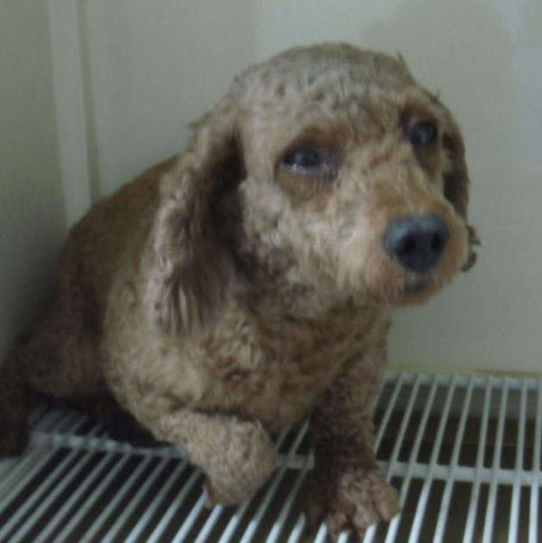
봉봄이
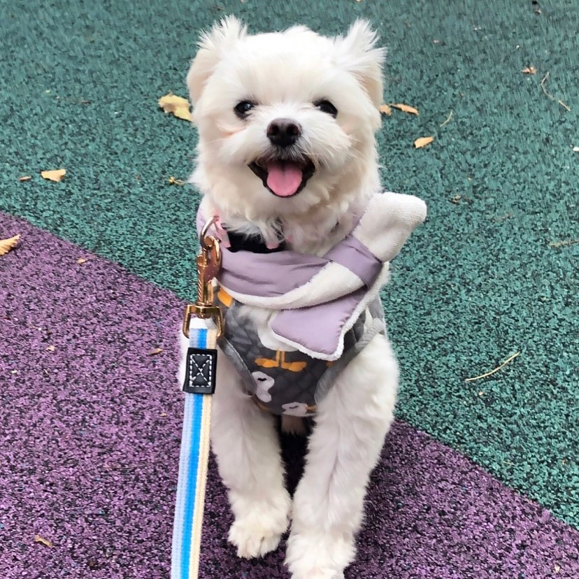
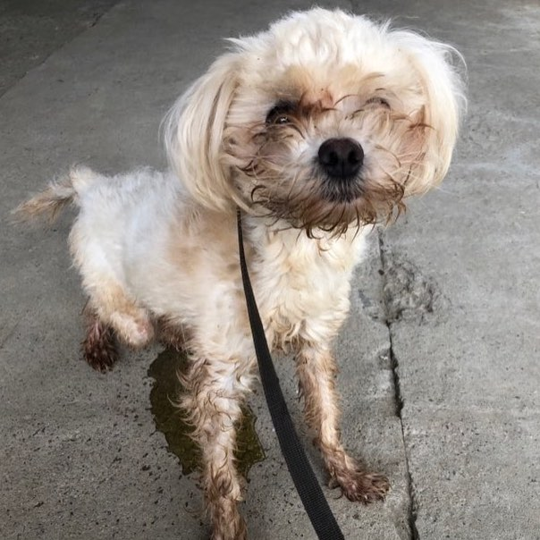
도담이
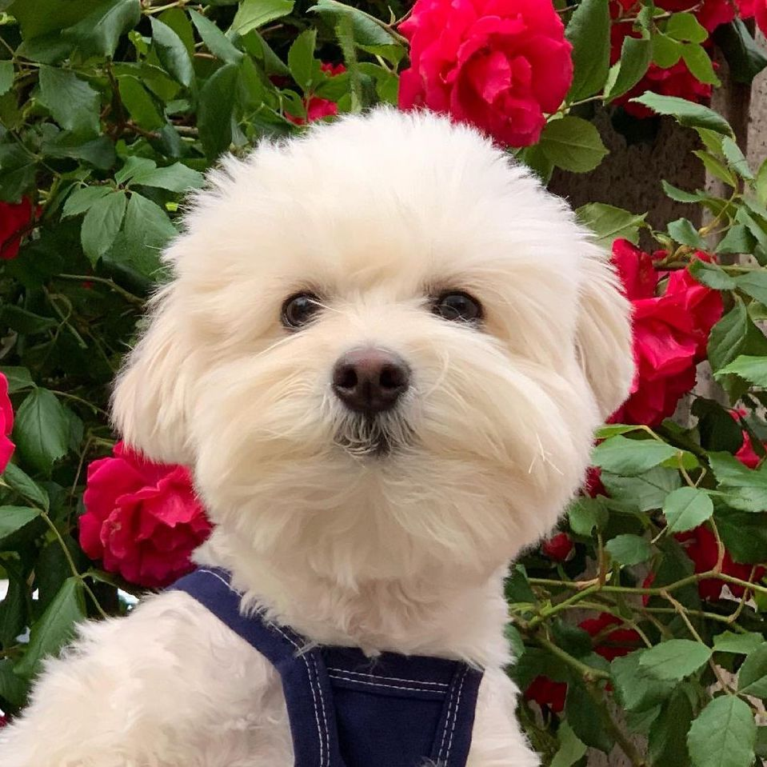
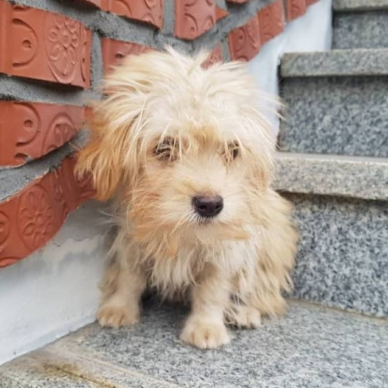
감자
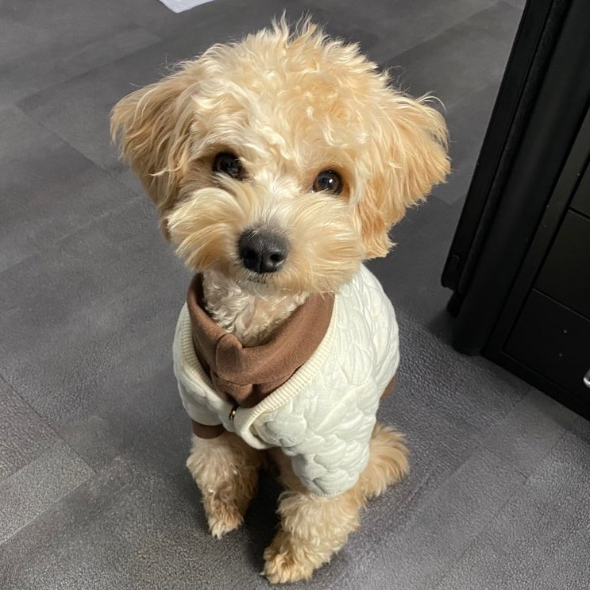
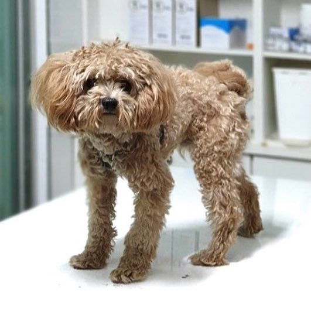
콩가루
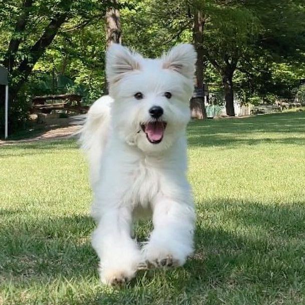
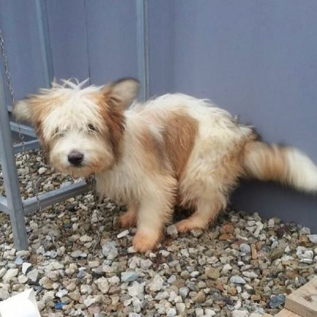
꿀떡이
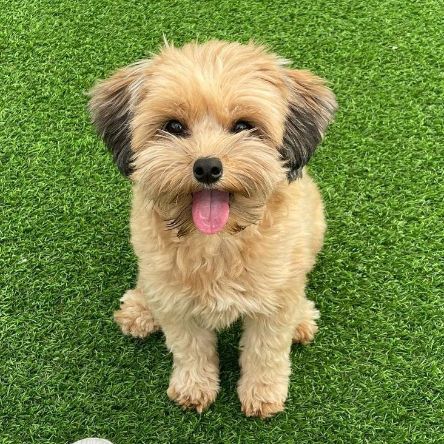
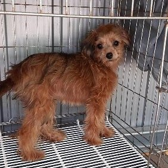
가을이
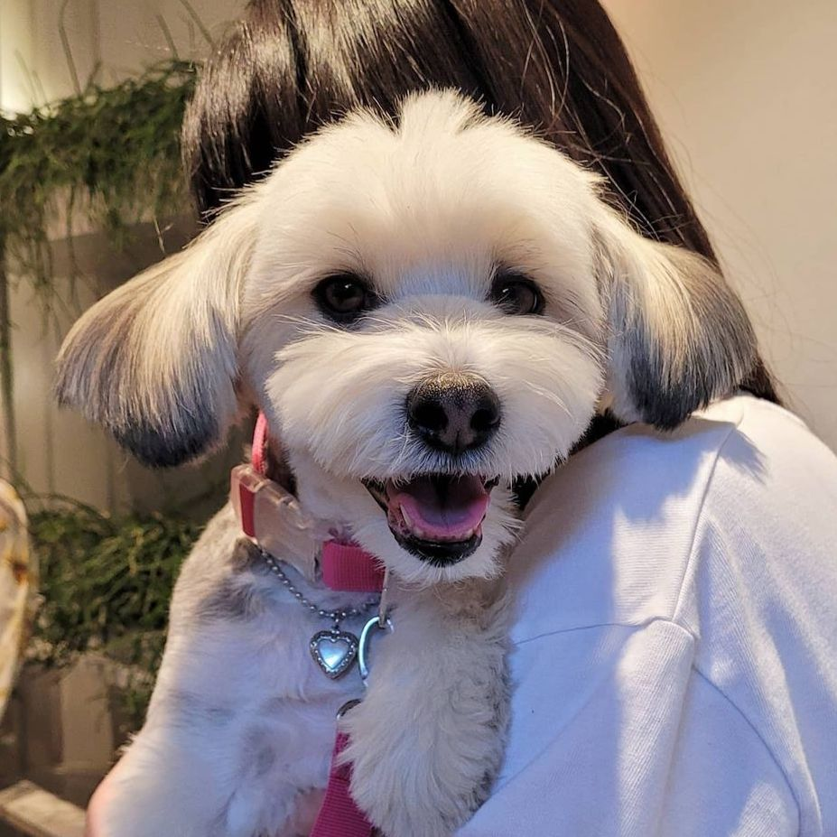

달이
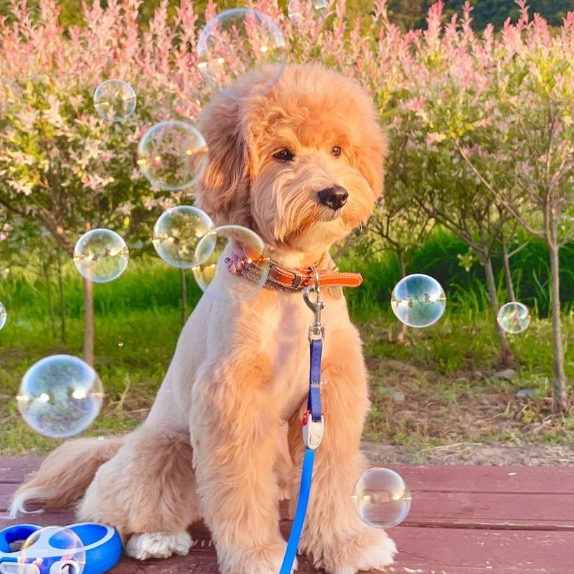
설앙뚜